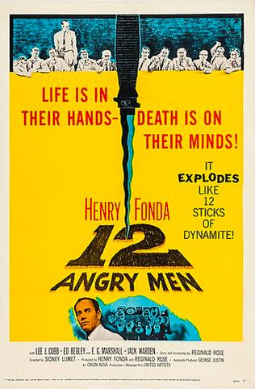

12 Angry Men
12 Angry Men is a 1957 American courtroom drama film directed by Sidney Lumet.
In the sweltering jury room of the New York County Courthouse, a jury prepares to deliberate the case of an impoverished teenager accused of stabbing his abusive father to death. The judge instructs the jury that if there is any reasonable doubt, the jurors are to return a verdict of not guilty; if found guilty, the defendant will receive a mandatory death sentence via the electric chair. To pass a verdict, the jury must be unanimous.